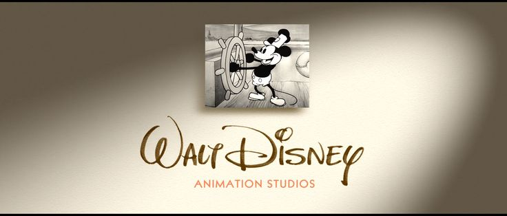
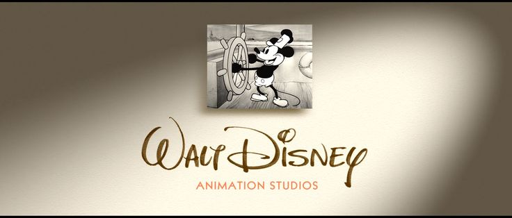

Movies have always been my quiet companions. Among all, Pixar & Disney animated films
have a special place in my heart. Their stories glow with emotion, kindness and wonder.
Here, I want to share three of my favourite films- ones that feel like a warm hug on a heavy day, that
remind you to breathe, to feel, and to dream again. They're comforting and quietly powerful. These movies will surely
calm your nervous system.
Inside Out is a Pixar's film that explores the five main emotions inside a young girl's mind:
joy, sadness, fear, disgust and anger. The story follows Riley as she grows up, learning to navigate
her feelings while facing big life changes. Sometimes she doesn't understand what she's feelings, but through
her journey, the film shows how all emotions play an important role in life.
In the 2nd part of the movie, as Riley becomes a teenager, her emotions grow more complex.
She sometimes feels confused or overwhelmed, but the film shows that even sadness is important — it helps her understand herself and connect with others.
WHY THIS MOVIE FEELS CLOSE TO ME:
Growing up, I’ve also felt that quiet confusion Riley faces, when you can’t name what you feel, when sadness and joy start mixing together. There’s a moment in Inside Out 2 where Riley feels overwhelmed, almost panicked and I understood that so deeply.
Sometimes it’s like your emotions are speaking over each other, and you’re just trying to listen.
This movie made me realize that sadness doesn’t mean something is wrong, it just means you’re feeling something important.
If you haven't watched the movie yet, here's the trailer:
Where can I watch the movie ?
You can watch the movie on JioHotstar.
WALL-E:
The movie WALL·E is set in the distant future, where Earth has become a deserted and polluted planet covered in garbage.
Humans have left the planet and now live in space, while small robots like WALL·E are left behind to clean up the mess.
WALL·E is the last working robot of his kind, and he spends his days compacting trash and collecting interesting objects he finds.
One day, a modern robot named EVE arrives on Earth to search for signs of life. WALL·E falls in love with her, and their adventure takes them across space,
where they try to bring humans back to their home planet and remind them how to care for Earth again.
WHY THIS MOVIE FEELS CLOSE TO ME:
For me, WALL·E is one of the most wholesome and comforting movies I’ve ever watched.
There’s something so pure about this little robot, quietly doing his job, collecting trash, and finding beauty in small things.
And then, when he meets EVE, it turns into this sweet, innocent love story between two robots that somehow feels so human.
The movie feels calm and cozy, but at the same time, it carries a really strong message about taking care of our planet
and not losing our sense of emotion and connection. Every time I watch it, it makes me feel peaceful and a little more hopeful about the world.
If you haven't watched the movie yet, here's the trailer:
Where can I watch the movie ?
You can watch the movie on JioHotstar.
BIG HERO 6:
Big Hero 6 is a Disney animated film that tells the story of Hiro, a young tech genius,
who forms an unexpected friendship with Baymax, a gentle, inflatable healthcare robot.
Together, they team up with Hiro’s friends to form a superhero group,
using their skills and inventions to solve a mystery and protect their city.
The film combines action, humor, and heart, showing how friendship, teamwork, and kindness can make a real difference.
WHY THIS MOVIE FEELS CLOSE TO ME:
Big Hero 6 feels so special to me because of the pure and heartwarming friendship it shows.
The bond between Hiro and Baymax is incredibly cute and comforting, from Baymax’s gentle care to their small,
meaningful moments like their handshake, every detail makes you smile.
The movie also celebrates friendship and teamwork among Hiro and his friends,
showing how real connections and supporting each other can help you grow and overcome challenges.
Watching it always leaves me feeling uplifted, cozy and also reminds me the value of care, kindness and togetherness.
If you haven't watched the movie yet, here's the trailer:
Where can I watch the movie ?
You can watch the movie on JioHotstar.
 
